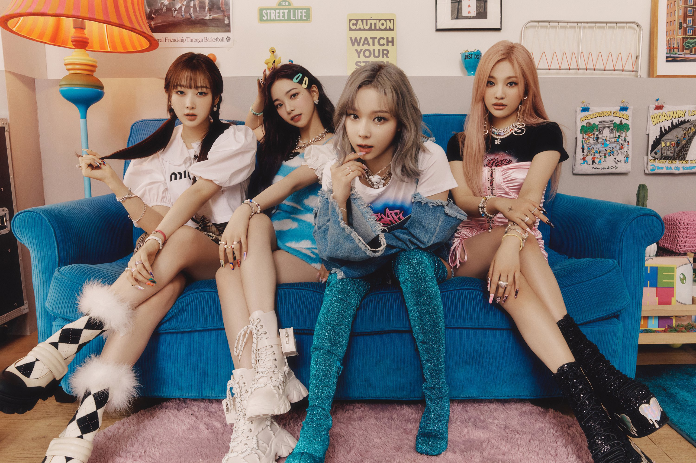

Be MY ae, aespa

2020년 11월 17일에 데뷔한
SM엔터테인먼트 소속의 4인조 다국적
걸그룹 aespa(에스파)는
Avatar X Experience(아바타 X
익스피리언스)를 표현한 ‘æ’와
양면이라는 뜻의 영단어 ‘aspect’를
결합해 만든 이름으로,
'자신의 또 다른 자아인 아바타를 만나
새로운 세계를 경험하게 된다'는
세계관을 바탕으로 획기적이고
다채로운 활동을 선보이고 있다.